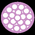
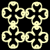
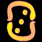
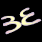
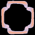

Symboly svìtelného jazyka.
Lord a Lady Rize prostøednictvím Karen Danrich, Mila Sinoski a Thomase Webera, Rama
13. prosince 1999
( pøeklad Vratislav Kašpárek )
Symboly svìtelného jazyka jsou postaveny na 144 konceptech které odrá�ejí svım tvarem, barvou a tónem. Tóny
jsou ekvivalentní tónùm neboli vibracím stvoøení. V prùbìhu èasu byly na zemi tóny stvoøení pøekrouceny. Tímto
pøekroucením pøevládla na zemi destrukce a oddìlení. Svìtelnı jazyk jsou pùvodní symboly, tóny a vibrace
pou�ívané na zemi pøed tímto pøekroucením. S velkou láskou a radostí sdílíme nyní tyto symboly s tìmi, kteøí
v tomto období historie vzestupují!
Svìtelnı jazyk je zalo�en na vìdomí jednoty. Ve vìdomí jednoty nejsou myšlenkové formy destrukce. Jakmile
iniciát stìlesní všech 144 symbolù svìtelného jazyka, pøestoupí všechny destruktivní vzory na všech úrovních
reality, vìdomé, podvìdomé a nevìdomé.
Prvních 48 symbolù stojí samostatnì a tvoøí základ svìtelného jazyka. Prvních deset symbolù vytváøí “Deset
Oktáv Lásky ” (viz. The Ten Octaves of Love). Zbıvajících 38 symbolù je tvoøeno kombinací dvou nebo tøí tìchto
originálních Deseti Oktáv Lásky variací tvaru, co� jim pøiøadí odlišnı tón nebo vibraci a v dùsledku toho i novı
vıznam. Ve své podstatì Deset Oktáv Lásky tvoøí základ svìtelného jazyka.
Ti kteøí dosáhnou stavu Bódhisatvy ve svém osobním vzestupu, zakotví ve svém poli prvních 48 symbolù a uèiní
první kroky k vìdomí jednoty ve své osobní �ivotní zkušenosti. Bódhisatva tím pøitahuje jazyk vìdomí jednoty do
všeho co dìlá a tak udr�uje stav neubli�ování.
Symboly se sami svou pøirozeností dìlí do kategorií. Pøirozenost ka�dého symbolu nejenom �e ovládá
patøiènı smysl symbolu, ale má i obzvláštní efekt na vìdomí a pole jedince. V rámci prvních 48 symbolù jsou ètyøi
hlavní kategorie:
AKTIVNÍ: “Aktivní” symboly vyjadøují mu�skou vibraci. Vnitøní mu�skost ovládá vnìjší pohybové
aktivity neboli pracovní stránku existence. Zamìøení na aktivní symboly pomáhá pøi spouštìní èinnosti nebo zmìny
v �ivotní zkušenosti jedince.
PASIVNÍ: “Pasivní” symboly vyjadøují �enskou vibraci. Vnitøní �enskost ovládá vnitøní pohybové aktivity
neboli “bytí”. Zamìøení na pasivní symboly pomáhá pøi naladìní dovnitø a lepší pochopení vlastního vnitøního
stavu bytí.
INTEGRAÈNÍ: “Integraèní” symboly vyjadøují sjednocení mu�ské a �enské èásti neboli sjednocení mezi
duchem a formou. Jinı vıraz pro tento stav je “Bo�ská Jednota”. Zamìøení na integraèní symboly pomáhá
nastolení rovnováhy mezi vnitøní mu�skou a �enskou èástí nebo nastolení rovnováhy mezi vnitøní a vnìjší realitou.
Zamìøení na tyto symboly rovnì� pomáhá rovnováze v kreativním tanci mezi duchem a formou.
UZAVÍRAJÍCÍ: “Uzavírající ” symboly jsou odrazem vnitøní bo�ské jednoty, která je transformována do
vnìjší zkušenosti se svìtem. Zamìøení na uzavírající symboly pomáhá umo�nit spoleèenství nebo vìdomí jednoty
s ostatními ve skupinì, oblasti nebo organizaci. Navíc, kdy� se zamìøíte na tyto symboly, vlastní myšlenkové formy
oddìlenosti, které vytváøí rozpolcenost ve vašem �ivotì, také vyplavou na povrch aby mohly bıt vyèištìny.
Jak se iniciát zamìøí na nìkterı symbol, nebo sérii symbolù, pøivedou do jeho pole patøiènı tón. Ka�dı tón
bude mít èistící efekt na pøekroucení na kterém zrovna jedinec pracuje podle svého stupnì vıvoje. Ka�dı tón
pomáhá pøi èištìní karmy, vzorù a zatuhlıch oblastí v éterickém, intuitivním, tvoøivém, emocionálním nebo
mentálním tìle, která obklopují formu. Jakmile jsou všechny tóny pøijaty do sítì éterického tìla, jedinec se stává
dr�itelem dostateènì vysoké vibrace, aby ovládl úroveò vıvoje stavu Mahavišnu ve svém vlastním vzestupu.
Symboly 49 a vıše jsou slo�eny ze dvou nebo tøí z pùvodních 48 symbolù, které jsou kombinovány do nové
sekvence s novım vıznamem, vibrací, tónem a barvou. Více o vıznamu kombinování dvou a více symbolù bude
uvedeno v pravı èas; tak zùstaòte správnì naladìni!
Pøipravili jsme soubor tarotovıch karet v PDF souborech pro sta�ení a vlastní vytištìní. Obrázková èást karet
a popisná èást karet. Je pøáním øádu Rize aby kompletní tarotová sada a kniha vyšla koncem roku 2000. Je však
naším pøáním, aby tyto informace byly pøístupné ji� nyní tìm, kdo je potøebují! Nejlepší je vytisknout si tyto
karty na barevné laserové nebo tryskové tiskárnì, aby byly dobøe vidìt barvy spolu s tvarem ka�dého symbolu.
Spolu s kartami jsou ke sta�ení i samostatné PDF soubory s popisem ka�dého symbolu uvedeného ní�e.
Vytištìnou sadu tarotovıch karet si lze objednat. (Pro tento èeskı pøeklad jsme pøipravili tarotové karty velikosti
9x6cm vèetnì popisù pro vytištìní ve formátu PDF viz. následuící odkazy)
Jakmile se zamìøíte na vta�ení symbolù svìtelného jazyka do do sítì vašeho éterického tìla, urychlíte trochu váš
vzestup. Doufáme, �e tyto informace pomù�ou všem, kdo� se na nì zamìøí na jejich osobní evoluèní cestì.
Pøejeme vám mnoho radosti na vaší cestì! Namaste.
Varování: Práce s tìmito symboly mù�e zpùsobit váš vzestup!
 #1 — Odpuštìní #1 — Odpuštìní
FORGIVENESS
rù�ová
Aktivní
Odpuštìní je základem veškeré jednoty, kde
všechno je dovoleno; a vše je zhojeno. Pøi pou�ívání vibrace
odpuštìní nic nevázne a proto je všechna karma uvolnìna.
Jakmile se odpuštìní stane souèástí aury je jakıkoliv vztah
po�ehnáním. Odpuštìní se manifestuje jako tisíciplátkovı lotos
v srdeèní èakøe Bódhisatvy ze kterého na všechny tryská
radost a soucit. |
#2 — Struktura
STRUCTURE
Levandulová
Pasivní
Structura je vibrace, která formuje a je-li
aplikována udr�uje prostor pro pøipojení dalších vrstev vibrací
aby se podle úrovnì stvoøení dokonèila nebo vytvoøila
myšlenka. Podobnì jako hrnek obsahuje nebo udr�uje prostor
pro potenciální smìšování ve tøetí dimenzi, zajiš�uje struktura
podobnou funkci v øíších energií. Pøedloha nebo sí� pomocí
které mohou bıt další vibrace provázány mù�e bıt další
mo�nost jak chápat strukturu. Její další funkcí je zajištìní cesty
pro tvorbu, vıvoj a komunikaci. |
 #3 — Síla #3 — Síla
POWER
broskvová
Integraèní
Síla je vibrace, která motivuje, podnìcuje, dává
formu a pøináší realizaci vibracím, které se s ní smìšují.
Samostatnì, vytváøí síla základ pro akci, vèetnì pohonu pro
expanzi a dokonèení skrze základ své integraèní pøirozenosti. Jak
se síla pohybuje jakımkoliv smìrem, nebo všemi smìry souèasnì,
tak se pøipojené vibrace pohybují s ní v záøivıch vlnách
jdoucích jedna za druhou. Síla zalo�ená na jednotì je
samostatnım celkem, kterı v�dy hledá jak by se rozšiøoval
skrze spolupráci, nicménì ve svém obsahu je absolutnì celistvı a
samostatnı. |
 #4 — Soucit #4 — Soucit
COMPASSION
tyrkysová
Aktivní
Soucit hledá v�dy jednotu, léèí, co není
celistvé a podporuje, co je celistvé. Soucit vycítí co je
nevyvá�ené a dovoluje, aby byla znovu získána nebo
zachována celistvost, rovnováha nebo vyrovnanost. Podstata
èinnosti a projev v léèení je rozšíøením soucitu. Soucit v
celistvosti se nestará o páchané nepravosti, spíše dbá jen o
kolektivní léèení které jde mimo zhroucení struktury. |
 #5 — Dech �ivota #5 — Dech �ivota
BREATH OF LIFE
zlatá
Pasivní
Dech �ivota vládne nebo dovoluje
expanzivním zámìrùm, aby je pronikl duch nebo to je�
zabezpeèuje dopøednı pohyb v ka�dém tvoøení. Ve volbì
rozvoje, dech �ivota volí svobodu pøed stagnací a zajiš�uje
evoluci jako vısledek. Dech �ivota dovoluje ve své podstatì
polo�it základy expanze bez vynucení nìjaké specifické zmìny. |
 #6 — Nepodmínìná láska #6 — Nepodmínìná láska
NON-CONDITIONAL LOVE
støíbrná
Integraèní
Nepodmínìná láska spojuje všechny aspekty
stvoøení s jádrem, vy�adované pro obecnı zámìr nebo
sjednocení. Jako vıraz bytí je nepodmínìná láska uznáním všech
vyjádøení Boha/Bohynì/Všeho Co Je. Nepodmínìná láska je
svou podstatou sjednocující, v�dy hledá vyladìní. |
 #7 — Svoboda #7 — Svoboda
FREEDOM
zlato-bílá
Aktivní
Vibrace, nebo té� tón svobody je esence, která
zajistí odsunutí všech vìcí, které neslou�í rozvinutí daného
okam�iku. Svoboda souèasnì zapøíèiòuje veškerou podporu
vıvojovému skoku navıšením energie. S tónem svobody
neexistuje støední cesta. Cokoliv podporuje dosa�ení svobody
zùstane a je posíleno a vše ostatní je odsunuto nebo
ponecháno stranou. |
 #8 — Bo�ská jednota #8 — Bo�ská jednota
DIVINE UNION
bledìlevandulová/bílá
Pasivní
Bo�ská jednota vytváøí porozumnìní, �e
aktivní a pasivní zpùsob vìdìní, uvìdomnìní a bytí se musí spojit,
aby mohlo bıt vytvoøeno celistvé, kompletní ìdomí. Všechny
aspekty musí bıt vidìny, pochopeny a sjednoceny pro
dokonèení. |
 #9 — Vìdomí jednoty #9 — Vìdomí jednoty
UNITY CONSCIOUSNESS
støíbrná/bílá/rù�ová
Integraèní
Vìdomí jednoty spojuje do jednotného celku
všechny aspekty uvìdomnìní, v rámci kterého je ka�dé vìdomí
chápáno jako aspekt celku. Potom neexistuje oddìlení mezi
�ádnımi vìdomími a je mo�né spoleèenství mezi všemi
vìdomími. Vìdomí jednoty nechápe hranice jako bariéry. Spíše,
uznává hranici jako bod, kde dochází k diferenciaci úèelu a tím je
hodna ocenìní a respektu. Takto, vìdomí jednoty mísí všechny
aspekty celku s respektem nebo� všechny pøispívají
k dokonèení vize. |
#10 — Nepodmínìná vláda
NON-CONDITIONAL
GOVERNANCE
bledì zlato-bílá
Uzavírající
Nepodmínìná vláda zajiš�uje uzavøení, kompletaci prvních 9
tónù stvoøení. Toto uzavøení v desátém tónu je vısledkem
kombinace všech aspektù obsa�enıch v prvních devíti tónech
stvoøení. Pomocí modulace její schopnosti se mù�e
nepodmínìná vláda mísit a zabezpeèovat smìr a úèel jakékoli
kombinace prvních devíti tónù. Tak jako otáèející se kaleidoskop
si stále zachovává zamìøení a smìr a udr�uje hranice aèkoli se
obraz mìní, nepodmínìná vláda dovoluje nekoneènì mnoho
vyjádøení v mezích hranic tónu. |
 #11 —Jurisdikce #11 —Jurisdikce
JURISDICTION
rù�ová & levandulová
Aktivní
Jurisdikce je jako hranice, která v rámci této
jurisdikce popisuje, kde mù�e bıt aplikován vliv a tím pádem
takté� ukazuje, kde nemù�e. Jurisdikce je nìco jako struktura
v rámci které je povoleno v urèité oblasti pøidání srovnávací
vrstvy. Jurisdikci mù�eme v podstatì vnímat i jako
bezpodmíneènı uèel v ka�dém vìdomí. V mezích, které
stejnorodé zámìry vymezují, mù�e bıt potom vytvoøena
struktura, která má pøirozené hranice vlivu, které tyto zámìry
ovlivòují. |
#12 — Nadìje
HOPE
broskvová & zlatá
Pasivní
Nadìje vy�aduje soucit ve svıch základech,
nebo� nadìje je vize za hranice toho co je a soucit ji �iví. Nadìje
je ve své podstatì vizionáøská, nicménì vzıvání nadìje také
zahrnuje postrèení vize ke tvoøivému aspektu. Dokud nadìji
udr�ujete, je energie smìrována v souladu s ní a je usmìròována
na souvzta�né okolnosti. Nezapomeòte, �e nadìje je pasivní
vibrace a pøináší mo�nost zmìny skrze vizi a je bez pohybu a
prostoru pro akci. |
 #13 — Mír #13 — Mír
PEACE
tyrkysová & støíbrná
Integraèní
Mír je centrující tón, kterı všem umo�òuje
existovat a pohybovat se bez potøeby vše mìnit. Jakmile
ztìlesníte mír, všechny zmìny, malé i velké, jsou pro vás
rovnocenou pøíle�itostí k vyjádøení sebe dalším zpùsobem.
Vzıvání míru v ka�dé situaci dává pøíle�itost vidìt okolnosti
z perspektivy celku. |
 #14 — Hojnost #14 — Hojnost
ABUNDANCE
bledì zlatá & levandulová
Aktivní
Tón, nebo vibrace hojnosti vnáší do ka�dého
okam�iku to co je po�adováno pro vyjádøení tohoto oka�iku,
aby se naplnil v celistvé jednotì. Hojnost je naplnìním a zahrnuje
vše co je potøeba pro plynulı pohyb støední cestou. S hojností
nepoznáte co je nedostatek , nebo� nedostatek je nekomletnost
a v nìm nelze za�ít naplnìní. Tvoøivá hojnost je celistvá a
dovoluje ka�dému za�ít celistvost a naplnìní. |
#15 — Prosperita
PROSPERITY
bledì rù�ová & zlatobílá
Pasivní
Prosperita je svou podstatou vizionáøská.
Prosperita je stav bytí, ve kterém udr�ujete vizi duše o
vyjádøení �ivota jako vyjádøení �ivota. Jak se bytost
pøibli�uje k bodu kdy se tìlo a duše sjednocují, zkracuje se
èasovı posun mezi vytvoøením vize a jejím vyjádøení ve
fyzickém svìtì. Vzıvání prosperity a její pøimísení do vize duše
pøináší kreativní odezvu. |
 #16 — Velikost #16 — Velikost
MAGNITUDE
levandulová & støíbrná
Integraèní
Velikost je svojí podstatou integraèní vibrace,
která spøádá energii do tapisérie celistvosti a naplnìní. Velikost
vdechuje do stvoøení plnost, umo�òuje expanzi a tím i vıvoj
jako�to sjednocující vıraz aktu tvoøení. Vzıvání velikosti
v jakékoliv tvoøivé èinnosti pøitahuje tvoøící aspekt, aby pøidal
k dílu svùj podpis a tím do nìho vnesl kreativní celistvost i kdy�
mo�ná na první pohled nepozorovanou. |
 #17 — Intuice #17 — Intuice
INTUITION
broskvová & tyrkysová
Aktivní
Intuice je tvoøivı kanál nebo tón, kterı si lze
pøedstavit jako komunikace mezi bytostmi tvoøícími vizi, která
má bıt vyjádøena v daném okam�iku. Intuici si lze pøedstavit
jako lokalizaci tvùrèí vize v rámci pøíslušného tvoøivého vlivu.
Bıt veden okam�ik za okam�ikem v projevu tvorby umo�òuje
celému stvoøení expanzi, rozlévání a vıvoj. To také dovoluje
ka�dému tvùrci aby expandoval, rozléval se a vyvíjel. |
 #18 — Pùsobení #18 — Pùsobení
FUNCTION
bledì levandulová & bledì rù�ová
Pasivní
Pùsobení je svou podstatou vizionáøské a
obsahuje obsáhlejší obraz definic aby tvoøící bytost mohla
pochopit jak jednotlivá stvoøení vzájemnì spolupracují a jsou
v sobì obsa�ená. Pùsobení obsahuje a poskytuje vıznam vize
tak�e jednota stvoøení je udr�ována jednotou obsa�enou ve
vizi. |
 #19 — Vytrvalost #19 — Vytrvalost
PERSEVERANCE
bledì zlatá & zlato bílá
Integraèní
V jednotném jazyku svìtla je vytrvalost
podobná dodávání energetického paliva pro vizi, dokud nedojde
k její manifestaci. Vytrvalost v sobì zahrnuje té� sjednocení
s vısledkem, tak jako jednota dovoluje celému stvoøení aby
bylo sjednocené a vytrvalost vytváøí tuto sjednocující formu. |
 #20 — Nepozorované pronikání #20 — Nepozorované pronikání
STEALTH
tyrkysová & zlato bílá
Uzavírající
Nepozorované pronikání je svou podstatou
dokonèující a proto obsahuje všechny vibrace symbolù 11-19,
které spolu tvoøí tón neboli vibraci nepozorovaného pronikání.
Nepozorované pronikání v sobì zahrnuje ticho,
nepostøehnutelnou pøizpùsobivost pøi modulování ostatních
vibrací pøi aktu tvoøení. Vibrace nepozorovaného pronikání se
pohybuje mezi i skrze všechny úrovnì tvoøivıch pøání a vizí
ve zhmotòujícím tvoøivém aktu v celistvosti a konzistenci. |
 #21 — Vìdomí #21 — Vìdomí
CONSCIOUSNESS
rù�ová & broskvová
Aktivní
Vìdomí je vibrací uvìdomování si a aplikované
znalosti a proto je orientované na èinnost. Vìdomí je rozpínavı
pohyh v�y vyhledávající evoluci pomocí interakce a postrkující
smìrem k neznámu. Vìdomí v sobì té� zahrnuje úèel a hledá
spojení s ostatními vìdomími podobného zamìøení. Vìdomí je
ovládané událostmi a zùstává ve spojení dokud není ukonèen
bì�nı zámìr.
|
 #22 — Vnitøní podstata #22 — Vnitøní podstata
INTERNAL
bledì levandulová & broskvová
Pasivní
Vnitøní podstata je tón pøítomnosti, vìdomí
sebe v centru bytí ka�dé bytosti. Vnitøní podstata té� znamená
vztah mezi duší a vnìjší formou, ne v aktivním slova smyslu ale
spíše jako spolupráci nebo splıvání mezi obìma aby byl
zajištìna zkušenost evoluce. Vnitøní podstata je tichou
pozorností. |
 #23 — Vnìjší podstata #23 — Vnìjší podstata
EXTERNAL
rù�ová & bledì rù�ová
Integraèní
Vnìjší podstata je svou podstatou integraèní a
sna�í se udr�ovat zkušenosti v rovnováze. Vnìjší podstata
harmonizuje touhu po vzájemné interakci a spojení s vnitøní
korekcí a tichou pozorností. V integraci rozpínavosti vìdomí a
osamocenosti pøítomnosti, zajiš�uje vnìjší podstata celistvost
bìhem cesty, co� je vyjádøením rovnováhy. |
 #24 — Jednotnost #24 — Jednotnost
ONENESS
tyrkysová & bledì rù�ová
Aktivní
Jednotnost dosahuje vzhùru i dovnitø aby
se propojila s vìtšími aspekty Já Jsem. V�dycky usiluje a hledá
spojení se zdrojem a souhlasnımi jádry v potenciálu prázdnoty.
Pøi napojování vzhùru i dovnitø z jednoho zdroje na druhı
pøichází bytost k jasnému poznání, �e rozvinutí „Všeho Co
Je“ je proces. Schopnost jedince vyjádøit se v tomto procesu se
stává funkcí pøijetí jednotnosti v jednotì.
|
 #25 — Pravda #25 — Pravda
TRUTH
broskvová & støíbrná
Pasivní
Pravda je tón, neboli vibrace jednoty, která
emanuje ze zdroje. Jako aspekt zdroje, vyjádøení pravdy je
vyjádøením zdroje. Jak se více a více navracíte ke zdroji,
vyjádøání jednoty se stává jasnìjším a kompletnìjšmí
vyjádøením zdroje i zdroj sám a� do té míry, kam dosáhnete. |
 #26 — Èinnost #26 — Èinnost
ACTION
zlatá & zlato bílá
Integraèní
Tón èinnosti integruje dosahování a
vyjadøování pravdy bytí, která je jedineèná pro ka�dı aspekt,
kterı vyjadøuje jinou rovinu reality. Bytí je akt odevzdání se do
toho co bytost opravdu je a jednoduché vyjádøení této
skuteènosti. Èinnost je interaktivní v tom, �e èím více
integrujete dosahování, vyjadøování a vzdávání se, tím více je
schopen reprezentovat a bıt zdrojem. |
#27 — Tekutost
FLUIDITY
tyrkysová, rù�ová & zlato bílá
Aktivní
Tón tekutosti umo�òuje plynout vyvíjet se a
mít schopnost mìnit se a manévrovat tak jak pravda bytosti
po�aduje. Tekutost obsahuje pohyb bez ohledu na okolnosti
spolu s touhou udr�et vibraci tekutosti nebo pohybu, která
postrkuje smìrem k evoluci. Tekutost se obtáèí kolem pravdy
aby zajistila energii pro pohyb a jasnost tak jak pravda vytváøí a
spolupracuje na vıvoji stvoøení. |
#28 — Zámìr
PURPOSE
levandulová, tyrkysová & rù�ová
Pasivní
Zámìr je vibrace, která zajiš�uje sjednocení
z pravdou ve všem manifestovaném. Zámìr té� obsahuje smìr a
aèkoliv je svou podstatou pasivní, je to povolující faktor
v jakékoliv tvùrèí konstrukci, bez ohledu na velikost nebo
dimenzi. |
 #29 — Integrita #29 — Integrita
INTEGRITY
broskvová, tyrkysová & rù�ová
Integraèní
Integrita je tón kterı integruje a splétá
dohromady proudy, sjednocuje a dává smìr aby ka�dı pøispíval
k celkovému �ití �ivota v rovnováze. Integrita následuje
myšlenky hledání, aby vytvoøila celkovı závìr z toho co bylo
objeveno pro celé bytí. V integraèním toku zùstáváte ve
vyzaøování zdroje. |
#30 — Rovnováha
BALANCE
zlatá, bledìlevandulová&levandulová
Uzavírající
Rovnováha je dokonèující vibrace kombinující
tóny 21–29 do dalšího tónu schopného interakce s ka�dım i
se všemi ze slouèenıch tónù. Rovnována pøináší pøi
modulování v daném momentì pøesné rozvrstvení tónù aby byl
zdroj vyjádøen co nejplnìji a nejkompletnìji. Jak ka�dı spøádá
realitu, musí bıt vyjádøení zdroje v rovnováze s ostatními
vyjádøeními. �ádné není dùle�itìjší, všechny jsou v jednotì.. |
 #31 — Èest #31 — Èest
HONOR
rù�ová, tyrkysová & zlato bílá
Aktivní
Èest je základem vztahù, vzájemného
ovlivòování, a spoleèenství. Èest umo�òuje, aby všechny
pravdy byly rovnocené jako zpùsoby vyjádøení. Èest podporuje
vzájemné pùsobení, které rozšiøuje evoluci a rozšiøuje cestu
pro vìtší interakci. Èest vyhledává spoleèenství jako naplnìní
vırazu. Jak se rozšiøuje èest, spojení se zdrojem se rozšiøuje a
uvádí do �ivota rozšíøené vztahy a plnìjší vyjádøení. |
 #32 — Snìní #32 — Snìní
DREAM
broskvová, støíbrná & zlato bílá
Pasivní
Snìní je pøíle�itost kde se valí rozlehlá
budoucnost. Snìní je svou podstatou pasivní, je pou�itelné pro
pozorování pøi bádání nebo vızkumu mimo rozsah tvoøivé
touhy, ale pøispívá jí. Snìní umo�òuje plynoucím vlnám
pøíle�itosti protékat kolem bez konkrétní potøeby reagovat
nebo pùsobit. |
 #33 — Iluze #33 — Iluze
ILLUSION
støíbrná, levandulová & bledì rù�ová
Integraèní
Iluze je integraèní vibrace tvoøící touhy, která
se vztahuje k skupinovému tvoøení. Iluze spøádá vizi jako
mo�nost a vytváøení cesty vzájemného pùsobení k vytvoøení
spoleèné reality. Tón iluze je dominantním tónem nebo
základnou pro stvoøení vytvoøené celkem, tak jak iluze hledá
expanzi, jak zùstat v pohybu, a zpøístupòujíce se všem vırazùm
zdroje. |
 #34 — Vášeò #34 — Vášeò
PASSION
rù�ová, levandulová & bledì rù�ová
Aktivní
Vášeò je vibrací kreativního pohybu. Vášeò
vyhledává vzájemné pùsobení s jinımi vášnìmi stejného
naladìní, aby tak vytváøela tok urèitım smìrem a z toho vzniká
pohyb. Vášeò pohání kupøedu v tvoøivém zápalu, aby se touha
zdroje vyvíjela ve stále nové modely úsilí. Ka�dı okam�ik bytí,
komletní a plnı nadšení s jedinou myšlenkou na tanec tvoøení,
to je esence vášnì.. |
 #35 — Tvoøivost #35 — Tvoøivost
CREATIVITY
støíbrná, levandulová & zlato bílá
Pasivní
Tvoøivost, svou podstatou pasivní,
zabezpeèuje cestu pro tok tvoøivého pohybu. Tvoøivı tón
emanuje ze zdroje ve vibraci nezbytné k tomu aby nesla vpøed
vizi svého zdroje. Ka�dı aspekt zdroje vyzaøuje unikátní tón,
kterı, je-li plnì vyjádøen, umo�òuje všem aby jej ve svém
vıvoji zakusili. |
 #36 — Sexuální energie #36 — Sexuální energie
SEXUAL ENERGY
rù�ová, levandulová & broskvová
Integraèní
Sexualita je integraèní tón kterı spojuje vášeò
a kreativitu, pou�ívající seba sama všude kde je nezbytné
dodat energii a podpoøit tvoøivou vizi zdroje.
Aplikování sexuality jednoty v�dy prosadí rùst, expanzi a
pohyb ve vyjádøení nebo� vibrace sexuality zdùrazòuje a
ovlivòuje skrze svoji pøirozenost všechny rozvíjející se
vyjádøení.
|
 #37 — Pøátelství #37 — Pøátelství
FRIENDSHIP
broskvová, zlatá & zlato bílá
Aktivní
Tón pøátelství spojuje dva nebo více aspektù
vìdomıch vìdomí. Pøátelství je spojení a obecnı úèel. Aspekty
se spojují v pøátelství jsou-li tóny v harmonii. Pøátelství je
aktivní, zahrnuje v sobì pohyb a rùst a neustále hledá spojení se
zdrojem a vìdomím. |
 #38 — Spoleèenství #38 — Spoleèenství
COMMUNION
tyrkysová, bledì levandulová & zlato
bílá
Pasivní
Spoleèenství je vibrace mísící ta vìdomí, která ji� demonstrovala
pøátelství. Spoleèenství je jako cesta, kterou kdy� následujete
umo�òuje vìdomí aby byla v pøítomnosti jiného aspektu sebe
sama. Spoleèenství je pohrou�ení se do smrti a nadechnutí jiné
tvoøivé zkušenosti.
|
 #39 — Tanec �ivota #39 — Tanec �ivota
DANCE OF LIFE
levandulová, broskvová & zlato bílá
Integraèní
Tanec �ivota integruje pøátelství a
spoleèenství, rozšiøuje tvoøivou zkušenost, která pøináší
rozkoš z vyjádøení sebe sama jako aspektu zdroje v stále
plynoucí extázi a uvolòující svìtlo a radost zatímco podporuje
expanzi. |
 #40 — Komunita #40 — Komunita
COMMUNITY
zlatá, støíbrná & rù�ová
Uzavírající
Komunita je dokonèující tón, kterı spojuje tóny
31–39 do nové vibrace, která má schopnost dirigovat tóny
31–39. Komunita vyvolává plné vyjádøení ka�dého ze
spojenıch tónù a mù�e inspirovat a øídit rozsáhlé tvùrèí
události. Komunita pohání dopøedu evoluci tím, �e umo�òuje
kreativní èinnost mezi mnohonásobnımi vìdomími.
|
#41 — Upøímnost
HONESTY
broskvová, bledì levandulová & rù�ová
Aktivní
Upøímnost je tón, kterı hledá sdílení pravdy.
Zdroj v�dy volí pohyb smìrem ven a novı zpùsob vzájemného
pùsobení se zdrojem. Upøímnost doprovází pravdu aby bylo
mo�né nové tvoøení , je-li zvoleno. Mísení a sdílení pravdy ji
rozšiøuje a tím se pravda vyvíjí. |
 #42 — Komunikace #42 — Komunikace
COMMUNICATION
rù�ová, tyrkysová & levandulová
Pasivní
Komunikace je mapa nebo otevøenı prostor
nebo klíè kterı umo�òuje pravdì vzájemnou interakci a
pochopení. Komunikace umo�òuje aby pravda zùstala ve svém
støedu a celistvá zatímco se otevírá a vnímá ostatní pravdy.
Komunikace vytváøí zrcadla a smìr ve kterıch se pravda odrá�í
a kudy se vyvíjí.
|
 #43 — Neviditelné svìty #43 — Neviditelné svìty
UNSEEN WORLDS
levandulová, støíbrná & bledì levandulová
Integraèní
Neviditelné svìty jsou vibrací, která integruje
èest a komunikaci do vıvojové zámìny a tvoøivého aktu.
Neviditelné svìty umo�òují pravdì expanzi do vìtšího celku
avšak pouze pøes odevzdání se vìtší pravdì. Odevzdání se
umo�òuje neviditelnım svìtùm aby vytváøely prostor pro
uèení. |
 #44 — Svìty které nemluví #44 — Svìty které nemluví
UNSPOKEN WORLDS
zlatá, bledì zlatá & zlato bílá
Aktivní
Svìty které nemluví (zvíøecí) umo�òují pravdì
expandovat vìdomí sebe sama za stávající hranice. Tím �e
zadezpeèují aktivnì se mìnící tvoøivé prostøedí, vytváøejí svìty
které nemluví vìtší a vìtší pøíle�itosti pro expanzi pravdy. Ve
smísení a odevzdání se do svìtù které nemluví, má pravda
pøíle�itost stát se tím, o èem nevìdìla �e mù�e bıt.
|
 #45 — Svìty pod vodou #45 — Svìty pod vodou
UNDERWATER WORLDS
levandulová, støíbrná & rù�ová
Pasivní
Svìty pod vodou jsou vizí na kterou se
pøipojují vìdomí aby generovaly pohyb ve známém. Ztìlesnìním
zkušeností z neznámého, hnací síly stvoøení vyjádøí své
symboly do vìdomého vìdomí, kde rozšiøují cestu pravdy. |
 #46 — Svìty na souši #46 — Svìty na souši
WORLDS UPON THE LAND
tyrkysová, svìtle zlatá & bledì rù�ová
Integraèní
Svìty na souši hledají cesty jak sjednocovat
rozmanité pravdy v tvoøení dovolujícím ka�dé jednotlivé pravdì
aby expandovala a vyvíjela se dle své vùle. Svìty na souši
integrují svìty které nemluví a svìty pod vodou aby mohla
pravda dále realizovat pøíle�itosti k odevzání se.
|
 #47 — Lidskı druh #47 — Lidskı druh
HUMAN SPECIES
broskvová, bledì rù�ová & zlato bílá
Aktivní
Lidskı druh je tónem, kterı umo�òuje aby se
pravda spojila s pravdou ve vìèném odevzdání, stále hledá, jak
se stát plnìjším a kompletnìjším symbolem, zatímco rozšiøuje
uvìdomnìní stvoøení. |
 #48 — Bùh/Bohynì/Vše co je #48 — Bùh/Bohynì/Vše co je
GOD/GODDESS/ALL THAT IS
støíbrná, levandulová, rù�ová & zlato bílá
Pasivní
Bùh/Bohynì je tónem cesty, vize a objetí;
odevzdáním se ještì vzroste jeho velikost a pravda se stane
pouhım majákem Všeho Co Je a sebe sama pochopí jako aspekt
tohoto majáku.
|